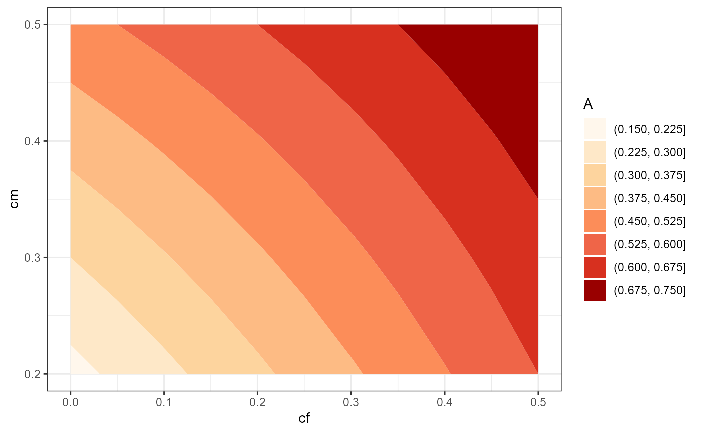

Convert vectors of conditional fishing and natural mortality rates to other mortality rates.
Source:R/seeMorts.R
seeMorts.RdConvert vectors of conditional fishing (cf) and natural (cm) mortality rates to instantaneous total (Z), fishing (F), and natural (M) mortality rates, total annual mortality rate (A), the annual exploitation rate (u), and the expectation of natural death (v). The primary purpose of this function is to provide a data.frame from which the user can explore the relationships between these rates and understand how choices of cf and cm effect the other rates, especially A and u.
Usage
seeMorts(cf, cm, type = 2, verbose = TRUE)
# S3 method for class 'SEEMORTS'
summary(object, verbose = TRUE, ...)Arguments
- cf
A numeric vector (could be of length 1) representing conditional fishing mortality. See details.
- cm
A numeric vector (could be of length 1) representing conditional natural mortality. See details.
- type
A single numeric that identifies whether the annual exploitation rate (u) and the expectation of natural death (v) should be computed for a type-
2(DEFAULT) or type-1fishery (as defined by Ricker (1975); see details).- verbose
A logical that indicates whether a brief note should be printed to the console. Defaults to
TRUE.- object
An object returned by
seeMorts.- ...
Arguments to be forwarded to
summary.
Value
The main function returns a data.frame with the following values:
cmis the given conditional natural mortality rates.cfis the given conditional fishing mortality rates.Mis the calculated instantaneous rate of natural mortality.Fis the calculated instantaneous rate of fishing mortality.Zis the calculated instantaneous rate of total mortality.Ais the calculated total annual rate of mortality.uis the calculated annual exploitation rate.vis the calculated expectation of natural death.
The summary function returns a data.frame with the following values for each of the mortality rates:
typeis the "type" of mortality rate (cm, cf, M, F, Z, A, u, or v).uniqueis the number of unique values.minis the minimum value (rounded to 3 decimal places).maxis the maximum value (rounded to 3 decimal places).
Details
Numeric values in the cf and cm vectors can be entered as a single value (e.g., cf=0.3), a sequence of values created with seq (e.g., cf=seq(0.1,0.5,0.05), or as unique values with c (e.g., cf=c(0.1,0.4,0.5) depending on the user's needs. Values of cf and cm will be repeated as necessary (via expand.grid) to form all combinations of the two sets of given values. Thus, neither cf and cm should contain repeated values.
Equations for computing the other mortality rates (F, M, Z, A, u, and v) from cf and cm are in Ricker (1975). Note that n and m in Ricker (1975) are cf and cm here.
The formulae for u and v differ depending on whether a Type-1 or a Type-2 fishery is being considered (see type). A Type-1 fishery is where fishing mortality occurs in a very narrow part of the annual period such that it is reasonable to assume that fishing and natural mortality do not both occur (or overlap) in that portion (e.g., a fishery where the open harvest season is only a few days). A Type-2 fishery is where natural and fishing mortality substantially overlap throughout the annual period (e.g., a fishery where the open harvest season is much of the annual period).
References
Ricker, W.E. 1975. Computation and interpretation of biological statistics of fish populations. Technical Report Bulletin 191, Bulletin of the Fisheries Research Board of Canada. Was (is?) from https://waves-vagues.dfo-mpo.gc.ca/library-bibliotheque/1485.pdf.
See also
yprBH_MinLL, yprBH_SlotLL, and dpmBH_MinLL for functions that require the user to provide reasonable values of cf and cm.
Examples
# == Simple examples ========================================================
seeMorts(cf=0.3,cm=0.2)
#> Conditional mortality calculations made for a Type-2 fishery.
#> cm cf M F Z A u v
#> 1 0.2 0.3 0.2231436 0.3566749 0.5798185 0.44 0.2706657 0.1693343
seeMorts(cf=0.3,cm=0.2,type=1)
#> Conditional mortality calculations made for a Type-1 fishery.
#> cm cf M F Z A u v
#> 1 0.2 0.3 0.2231436 0.3566749 0.5798185 0.44 0.3 0.14
# == More realistic example =================================================
test <- seeMorts(cf=seq(0,0.5,0.05),cm=c(0.2,0.3,0.4,0.5))
#> Conditional mortality calculations made for a Type-2 fishery.
head(test)
#> cm cf M F Z A u v
#> 1 0.2 0.00 0.2231436 0.00000000 0.2231436 0.20 0.00000000 0.2000000
#> 5 0.2 0.05 0.2231436 0.05129329 0.2744368 0.24 0.04485692 0.1951431
#> 9 0.2 0.10 0.2231436 0.10536052 0.3285041 0.28 0.08980389 0.1901961
#> 13 0.2 0.15 0.2231436 0.16251893 0.3856625 0.32 0.13484863 0.1851514
#> 17 0.2 0.20 0.2231436 0.22314355 0.4462871 0.36 0.18000000 0.1800000
#> 21 0.2 0.25 0.2231436 0.28768207 0.5108256 0.40 0.22526832 0.1747317
tail(test)
#> cm cf M F Z A u v
#> 24 0.5 0.25 0.6931472 0.2876821 0.9808293 0.625 0.1833156 0.4416844
#> 28 0.5 0.30 0.6931472 0.3566749 1.0498221 0.650 0.2208362 0.4291638
#> 32 0.5 0.35 0.6931472 0.4307829 1.1239301 0.675 0.2587158 0.4162842
#> 36 0.5 0.40 0.6931472 0.5108256 1.2039728 0.700 0.2969984 0.4030016
#> 40 0.5 0.45 0.6931472 0.5978370 1.2909842 0.725 0.3357375 0.3892625
#> 44 0.5 0.50 0.6931472 0.6931472 1.3862944 0.750 0.3750000 0.3750000
summary(test)
#> Summary of Mortality Rates
#> type unique min max
#> 1 cm 4 0.200 0.500
#> 2 cf 11 0.000 0.500
#> 3 M 4 0.223 0.693
#> 4 F 11 0.000 0.693
#> 5 Z 38 0.223 1.386
#> 6 A 38 0.200 0.750
#> 7 u 41 0.000 0.454
#> 8 v 44 0.146 0.500
#-- Optional plotting examples ----------------------------------------------
if (require(ggplot2)) {
ggplot(data=test,mapping=aes(x=cf,y=u,color=as.factor(cm))) +
geom_line(linewidth=1) +
theme_bw()
ggplot(data=test,mapping=aes(x=Z,y=A)) +
geom_line(linewidth=1) +
theme_bw()
ggplot(data=test,mapping=aes(x=cf,y=cm,z=A)) +
geom_contour_filled(bins=9) +
scale_fill_discrete(name="A",palette="OrRd") +
theme_bw()
}
